| 日付 | 2010年11月7日（日） |
|---|---|
| 山域 | 西上州 |
| メンバー | 単独 |
| 山行形態 | 日帰り |
| アクセス | 電車、バス |
| ルート (Map) | 那須→一ノ鳥居→二ノ鳥居→稲含山→鳥居峠→那須 |
西上州の山々は標高が低く、目立った山はあまりない。
その中にあって御荷鉾山や稲含山は里に近く比較的目立つ山だ。
御荷鉾山は以前登ったことがあるが、稲含山はアクセスが悪く、
西上州特有の岩山でもないため、これまで登っていなかった。
とはいえ、西上州を代表する山の一つなので、一度は登っておきたいと思い、
行ってみることにする。
11:07 那須バス停到着。標高500m。
とにかくアクセスの悪い山なので、ずいぶん遅い到着だ。
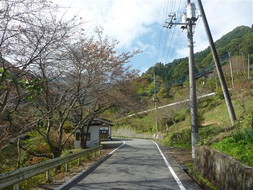
車道からはこれから登る稲含山がよく見えている。
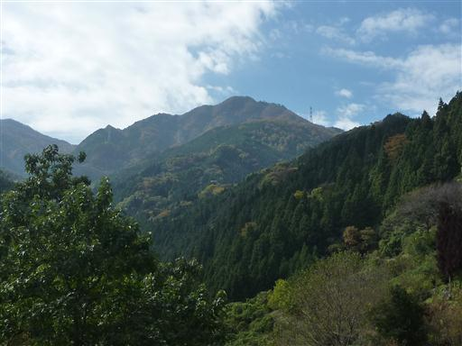
車道脇にある稲含大明神。建物は比較的新しい。
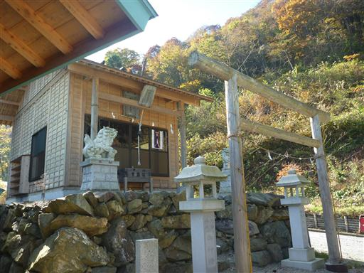
登山道入口に到着。多くの車が停まっている。
もう12時をまわってしまったので、すでに下山してきている人もいる。
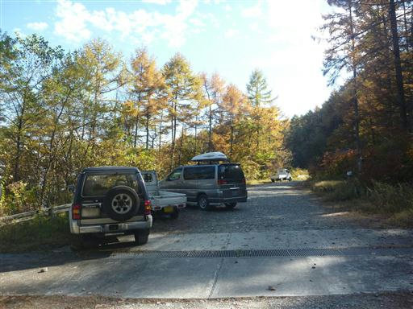
登山道入口にある神ノ池。ひっそりとした小さな池だ。
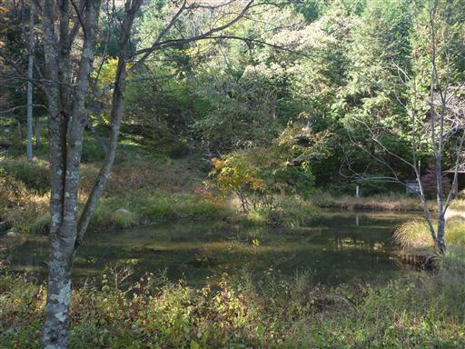
登山道を少し登ると一ノ鳥居が現れる。この山は昔から信仰の山だったので神社や鳥居がある。
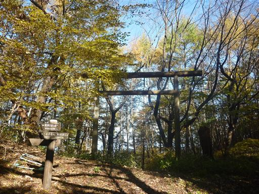
途中、巨木の案内標識があったので、少し寄り道することにする。
道中からは素晴らしい展望が広がる。
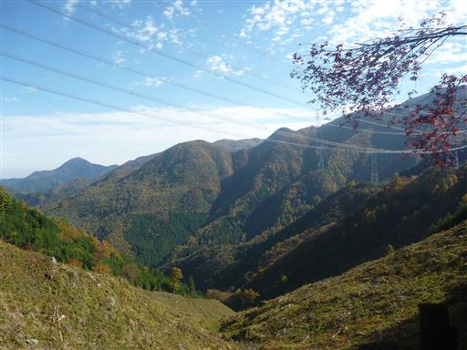
歩くこと15分ほどでケヤキの巨木に到着する。
幹回り10m、樹高30m、推定樹齢は500年だそうだ。
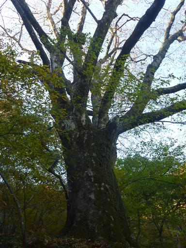
太い幹は途中で分かれている。このことから夫婦ケヤキと呼ばれているそうだ。
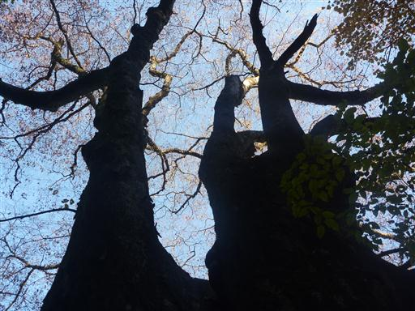
この辺りは明るい落葉広葉樹林帯で、紅葉し始めている。
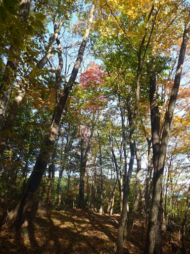
二ノ鳥居に到着。こちらは質素な鳥居だ。
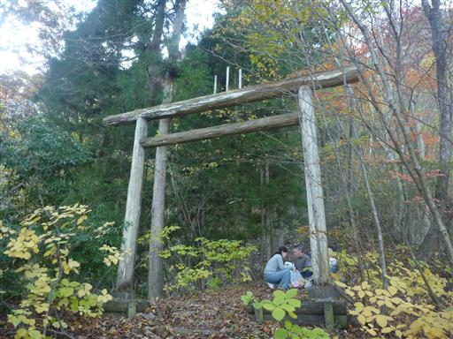
鳥居のすぐ先に秋畑稲含神社が建っている。
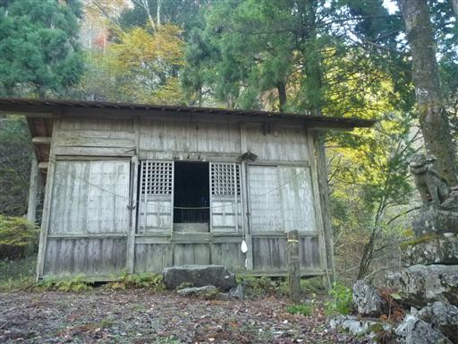
山の斜面の小さな平坦地だが、建物の規模は非常に大きい。
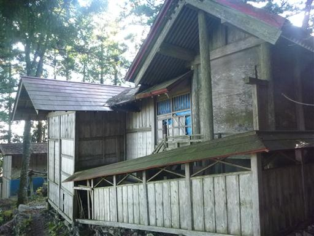
山頂付近は急斜面になっていて、フェンスが張り巡らされている。
無粋だがファミリー登山の山のため仕方がない。
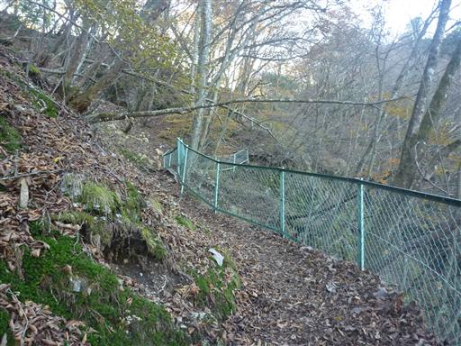
山頂直下には稲含神社が建てられている。これまた立派な神社だ。
この山はとにかく神社が多い。
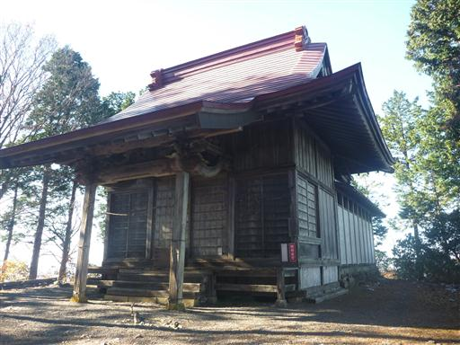
神社の傍にある石灯篭。こんなに重いものをよく山頂まで運んだものだ。
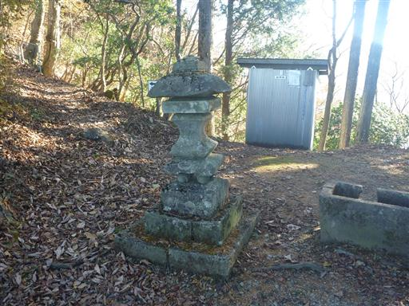
13:59 稲含山山頂到着。標高1370m。
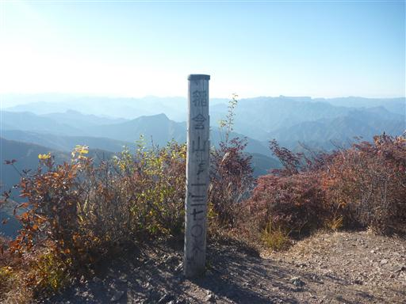
山頂は少々狭いが明るく開けている。時間が遅いので他に誰もいない。
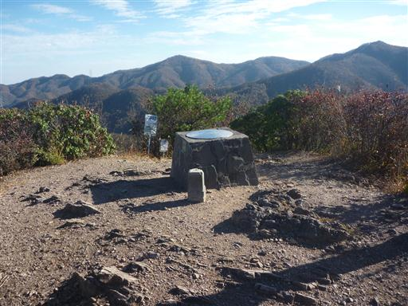
山頂の周りの木はみな腰のあたりの高さで刈られてしまっている。
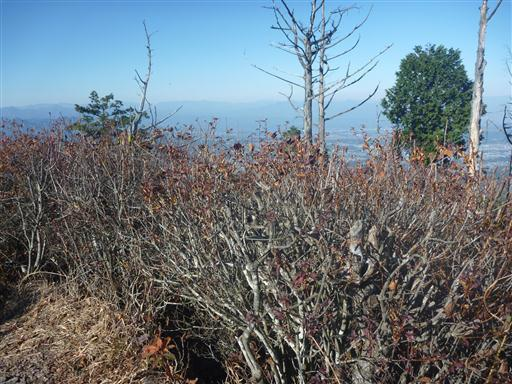
そのため山頂からの展望は非常に良い。左手にある高い山は浅間山だ。
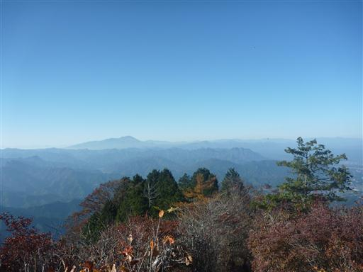
はるか遠くには白い峰々がかすかに見えている。北アルプスのようだ。
今日は空気が澄んでいるので、はるか遠くまで見渡せる。
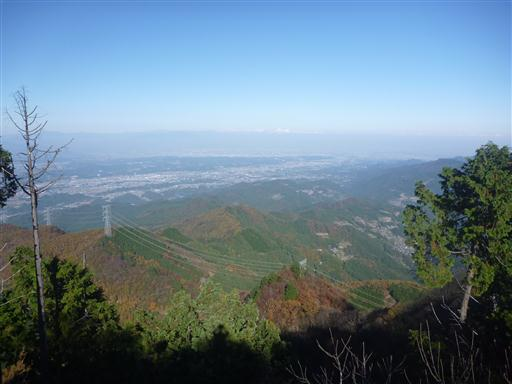
下山は別の道を行く。こちらの道も大きな赤い鳥居が立っている。
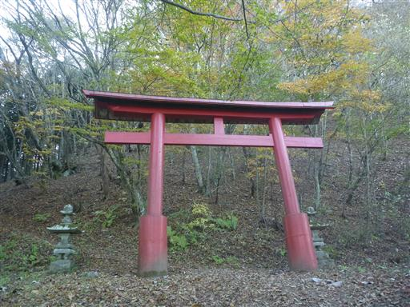
茂垣峠に到着。「ガイドブックには鳥居峠とありますが誤りです」と記載されている。
誤っていた地名が正式名称となってしまうこともよくあるので、
何をもって誤っていると判断するのかは微妙なところだが…
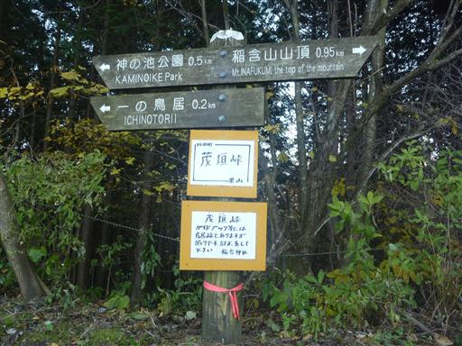
下山道から御荷鉾山がきれいに見えている。あの山も展望の良い山だ。
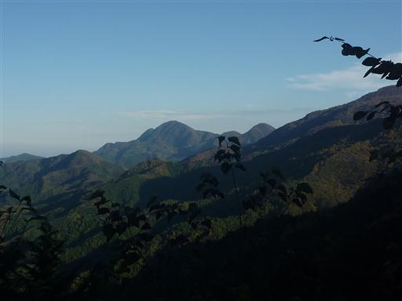
16:08 那須バス停到着。
15:30のバスが行ってしまい、次のバスは17:30で、寒い中ずいぶんと待たされる。
ケヤキを見に行かなければ、前のバスに間に合っていたのだが…
車道歩きが長かったが、巨木、神社、展望と見どころの多い山だった。
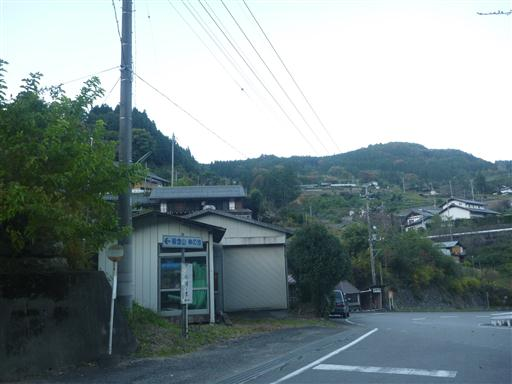